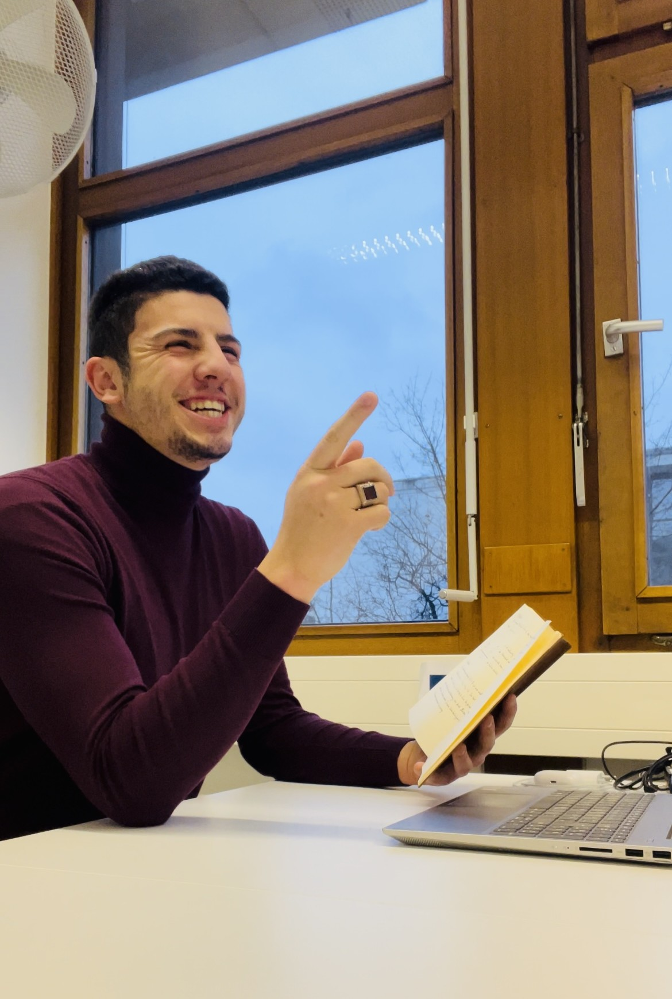

Kontakt · Fragen · Organisatorisches
Fragen ?
Schreib mir.
Falls du Fragen zum Tutorium, zu den Materialien, zu organisatorischen Themen oder allgemein zu Analysis I und II hast, meld dich einfach jederzeit per E-Mail bei mir.
Schreib mir gerne direkt
Du willst mehr wissen, kommst bei einer Aufgabe nicht weiter, hängst an einem Thema oder wünschst dir einfach etwas mehr Klarheit? Dann schreib mir ruhig – egal ob inhaltlich oder organisatorisch. Am besten hilft's mir, wenn du dein Anliegen kurz und konkret beschreibst und – falls es passt – das jeweilige Übungsblatt, die Aufgabe oder das Thema kurz nennst. So kann ich schneller einordnen, worum es geht, und dir gezielter weiterhelfen.
M.Guenkaya@campus.lmu.deÜber mich · Hintergrund · Lehrtätigkeit
Über mich
Hinter der Seite steckt kein großes Team, sondern einfach ich – mit ziemlich viel Lust darauf, Mathe verständlich rüberzubringen. Hier ein paar Worte dazu, wer ich bin und wie ich an die Sache rangehe.

Kurz zu mir: Geboren bin ich am 12.05.1999 in Augsburg, ein Teil meines Lebens lief aber auch in der Türkei. Diese zwei Welten haben mich ganz schön geprägt – und mir früh gezeigt, dass man mit Disziplin, Geduld und einfach Dranbleiben echt weit kommt. Das steckt bis heute in fast allem, was ich mache.
Angefangen hab ich eigentlich mit Physik. Spannende Zeit, in der ich viel über sauberes, analytisches Denken gelernt habe – aber irgendwann hat's einfach Klick gemacht: Mich zieht vor allem das Abstrakte, Logische, richtig Durchdachte an. Also bin ich komplett zur Mathematik gewechselt, die ich gerade im letzten Abschnitt meines Bachelors an der LMU studiere. Und ehrlich gesagt: beste Entscheidung.
Mathe ist für mich kein stures Rechnen, sondern eine Art zu denken. Mich fasziniert diese Mischung aus Klarheit, Tiefe und Eleganz – gerade die Sachen, die am Anfang richtig fies abstrakt wirken und später plötzlich schön werden, sobald der Groschen fällt. Genau dieses Gefühl will ich weitergeben.
Beim Erklären gehe ich gern mehrere Wege gleichzeitig, weil eben nicht jeder über denselben Zugang versteht. Ich male und visualisiere viel und fange oft erst in einfachen, niedrigen Dimensionen an, bevor es allgemein und abstrakt wird. Und das Wichtigste: Ich mag keine Beweise, die man einfach stur auswendig runterbetet. Viel spannender finde ich die Frage, wie man überhaupt auf die Idee kommt – diese Ideenfindung ist für mich der eigentliche Kern. Deshalb zerlege ich Aufgaben gern in kleine Schritte, sodass man Stück für Stück wirklich versteht, was da passiert, statt nur einen fertigen Lösungsweg nachzulesen.

Nebenbei gebe ich seit mittlerweile rund sechs Jahren Nachhilfe – Schülerinnen, Schüler und Studierende, lauter unterschiedliche Köpfe und Lernwege. Das hat mir vor allem eins gezeigt: Gute Lehre heißt nicht, ein Thema selbst zu können, sondern zu verstehen, wo der andere gerade hängt, und es so zu erklären, dass es wirklich ankommt.
Im Wintersemester 2025/2026 war ich Tutor in Analysis I, im Sommersemester 2026 bin ich weiterhin Tutor für Analysis II – und das macht mir ehrlich richtig Spaß. Es ist einfach ein schönes Gefühl zu sehen, wie aus anfänglicher Unsicherheit nach und nach Sicherheit und Klarheit wird. Im Tutorium gehe ich auch gern mal tiefer und schlage die Brücke zur Anwendung, einfach weil man Dinge dann oft viel besser greift – und ich springe bewusst zwischen anschaulichem, fast schulischem Denken und dem höheren Uni-Niveau hin und her, damit der Einstieg leichter fällt, ohne dass es unsauber wird.
Abseits der Uni hab ich auch schon anderes gemacht: über zwei Jahre in der Finanz- und Consultingbranche, unter anderem als Werkstudent in der Finanzanalyse und als Sales-Berater bei einem SAP-Partner. Und Sport war für mich immer ein großes Ding – Amateur-Tennis mit einer Leistungsklasse von 9,1 und Golf auf ziemlich hohem Niveau, teils halbprofessionell, mit einem besten Handicap von -1,1. Klingt erstmal random, hat mir aber genau das beigebracht, was im Studium hilft: mit Druck umgehen, dranbleiben und Rückschläge wegstecken.
Mit dieser Seite will ich nicht einfach ein paar PDFs hochladen, sondern einen Ort schaffen, der wirklich weiterhilft. Gerade in der Analysis ist der Einstieg hart, weil Uni-Mathe komplett anders tickt als Schule. Wenn dir das hier hilft, mehr Sicherheit, mehr Klarheit oder sogar ein bisschen Spaß an der Sache zu finden – dann hab ich genau das erreicht, worum es mir geht.